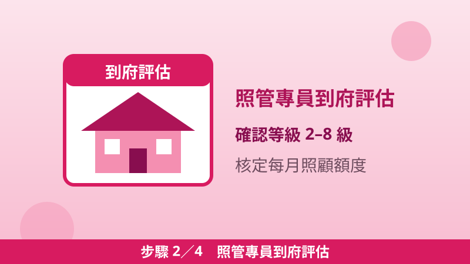
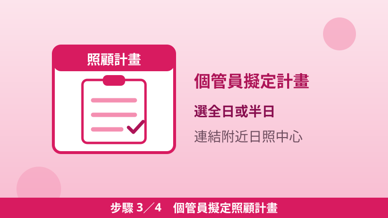
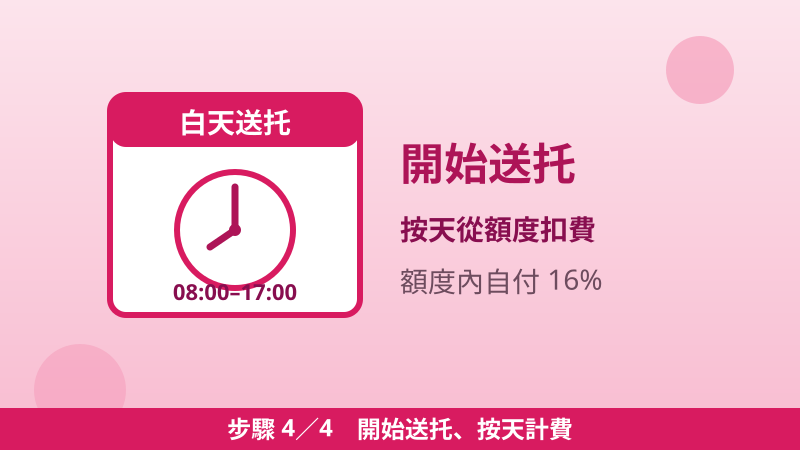

長照日間照顧中心怎麼申請？白天送去、晚上回家，全日每天自付 108 元起、4 步驟一次看懂
白天家裡沒人，失能或失智的長輩一個人在家不安全；請全日看護又是一筆大開銷。日間照顧中心就是為這個空窗設計的：早上送長輩去中心，白天由專業團隊照顧、吃飯、做活動，傍晚接回家。一般戶全日每天自付只要 108 元起，低收入戶全額補助。
日照中心是什麼？白天照顧、晚上回家
日間照顧中心（簡稱日照中心）是設在社區裡的長照機構。衛福部的說明是：失能或失智長輩白天就近到中心接受服務，除了基本照顧、餐飲和往返交通接送，還有健康促進、文康休閒活動和家屬指導諮詢。長輩白天有人照顧、有伴，晚上回家睡覺，家人白天安心上班。
服務時間一般是週一到週五白天，例如國軍花蓮總醫院日照中心全日 08:00–17:00、半日 08:00–12:00 或 13:00–17:00；各中心不同。
日照中心提供哪些服務
依各縣市政府公告，日照中心的服務內容包括：
- 生活照顧：如廁、進食、更衣、移位等日常照顧
- 健康促進：伸展操、肌力訓練、量血壓、給藥
- 文康休閒：認知刺激、懷舊治療、手作、團體互動
- 備餐：營養午餐與點心，依吞嚥能力調整
- 交通接送：專車往返住家與中心，每趟 115 元
- 家屬指導：教家屬照顧失智長輩
- 沐浴、晚餐：需要時另行安排
中心也提供喘息服務：主要照顧者需要休息時，長輩可到日照中心接受替代照顧，費用從每年喘息額度扣。
費用怎麼算：先看等級，再看全日或半日
日照費用是衛福部《長照給付及支付基準》的全國公定價，按等級分 7 種全日價格，半日約為全日的一半。費用從每月「照顧及專業服務」額度扣，額度內再依身分別自付：一般戶 16%、中低收入戶 5%、低收入戶全額補助。
| 長照等級 | 每月照顧額度 | 全日費用 | 半日費用 | 一般戶自付（全日／半日） |
|---|---|---|---|---|
| 第 2 級 | 10,020 元 | 675 元 | 340 元 | 108／54 元 |
| 第 3 級 | 15,460 元 | 840 元 | 420 元 | 134／67 元 |
| 第 4 級 | 18,580 元 | 920 元 | 460 元 | 147／73 元 |
| 第 5 級 | 24,100 元 | 1,045 元 | 525 元 | 167／84 元 |
| 第 6 級 | 28,070 元 | 1,130 元 | 565 元 | 180／90 元 |
| 第 7 級 | 32,090 元 | 1,210 元 | 605 元 | 193／96 元 |
| 第 8 級 | 36,180 元 | 1,285 元 | 645 元 | 205／103 元 |
試算：第 4 級一般戶，每月額度 18,580 元，全日每天 920 元，去 20 天共 18,400 元，在額度內，自付 147 元 × 20 天＝2,940 元。改去半日，同額度可去約 40 天，自付 2,920 元。低收入戶自付 0 元，中低收入戶自付 920 元。
誰可以申請
須經評估核定為第 2 級以上，並符合下列身分之一：
- 65 歲以上失能長者
- 55 歲以上失能原住民
- 失智症者（50 歲以上；2026/1/1 起新增 49 歲以下）
- 失能身心障礙者
- 急性後期整合照護計畫（PAC）收案對象（2026/1/1 起新增）
各縣市規定略有不同，實際資格以居住地照管中心的核定為準。
圖文四步驟：從打電話到開始送托
步驟 1打 1966 申請長照服務
市話、手機直撥 1966，前 5 分鐘免費；也可找居住地縣市照顧管理中心申請，人不在身邊也能代申請。

步驟 2照管專員到府評估
照管專員到家評估，確認需要等級（第 2 級以上才符合資格）與每月照顧額度。

步驟 3個管員擬定照顧計畫
與個案管理員討論服務內容，把日間照顧寫進照顧計畫：選全日或半日、每週去幾天，連結附近的日照中心。

步驟 4開始送托、按天計費
計畫核定後開始送托，費用按天從每月額度扣，額度內一般戶自付 16%；想多去幾天、改半日，再跟個管員調整。
常見問題
家裡已請外籍看護工，還能用日照中心嗎？
可以。衛福部明載：聘僱外籍看護工的家庭可用照顧及專業服務額度的 30%（除居家服務外），日間照顧可用這 30% 額度；外籍看護工請假時，也可申請喘息服務銜接。
全日跟半日怎麼選？
看長輩體力和家裡作息。全日約 8–10 小時，適合白天整天沒人在家的家庭；半日約 4 小時、費用約一半，適合只需半天有人顧、或想把額度拉長天數的家庭，之後還能再調整。
晚上臨時沒人顧怎麼辦？
可用小規模多機能的夜間住宿：臨時有夜間住宿需求時，每月最多可用 15 天。
額度用完還能繼續去嗎？
可以，超過額度的部分全額自費。各中心全自費收費不同，例如國軍花蓮總醫院日照中心全日輕度 750 元、中度 1,000 元、重度 1,250 元，洽各中心確認。
📖 延伸閱讀：長照 2.0 申請教學：打 1966 專線、四步驟、在家就能評估 ／ 長照四包錢金額表（2026）：照顧、交通、輔具、喘息額度與自付比率一次看懂 ／ 長照交通接送補助怎麼用？每月最高 2,400 元、就醫復健與日照接送 4 步驟 ／ 長照喘息服務怎麼用？每年最高 48,510 元，讓主要照顧者好好休息
📎 資料來源
- 衛生福利部長照專區「照顧服務」（日間照顧定義、小規模多機能夜間住宿每月最多 15 天）：1966.gov.tw
- 衛生福利部長照專區「申請長照服務」（資格、四步驟、四包錢額度表、自付比率、外看家庭 30% 額度）：1966.gov.tw
- 臺北榮民總醫院員山分院「長照服務暨收費標準」（日間照顧 BB01–BB14 全日／半日價格與自付金額、社區式交通接送 115 元）：org.vghtpe.gov.tw
- 國軍花蓮總醫院「日間照顧中心簡介」（服務時間、額度與自付表、全自費輕／中／重度 750／1,000／1,250 元）：805.mnd.gov.tw
- 桃園市政府衛生局長期照護「日間照顧中心」（服務內容 8 項、申請資格）：care.tycg.gov.tw
最後查證日期：2026-11-19
免責聲明：本文僅供參考，補助資格與金額以政府官方最新公告為準，申請前請至官方網站或洽受理機關確認。